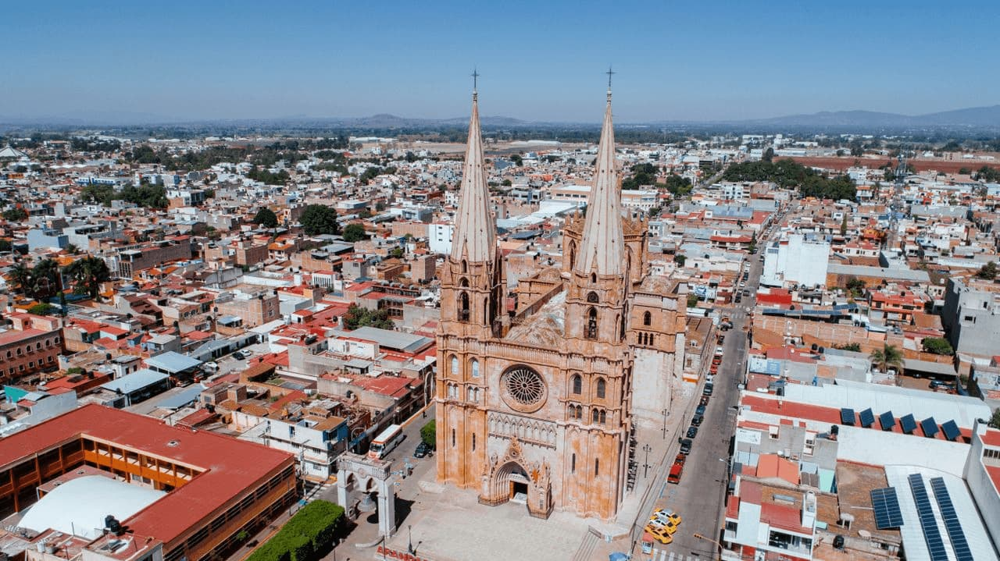
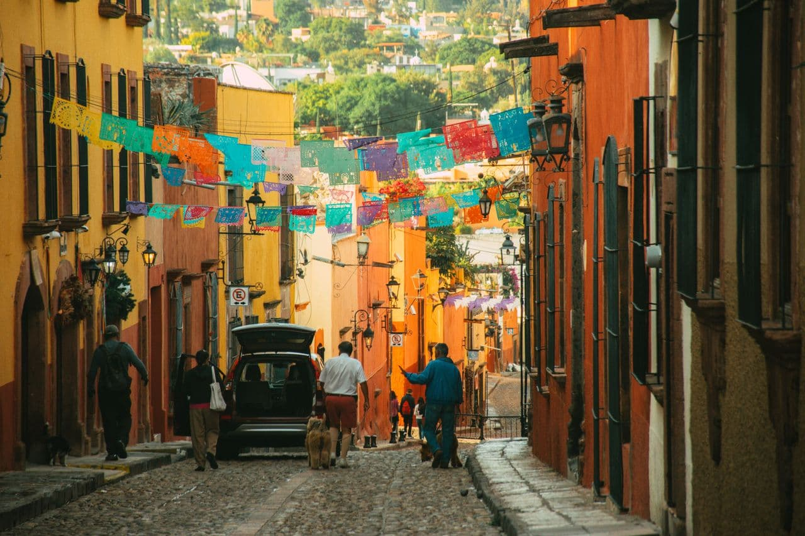
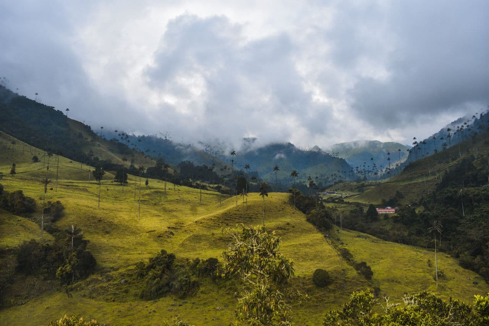
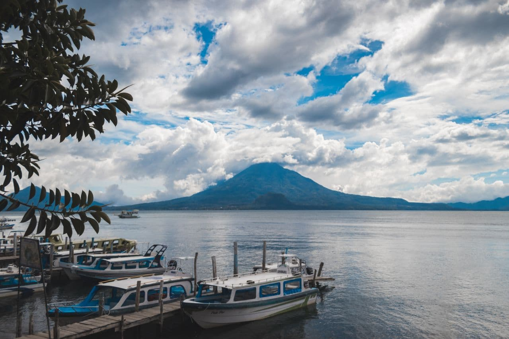
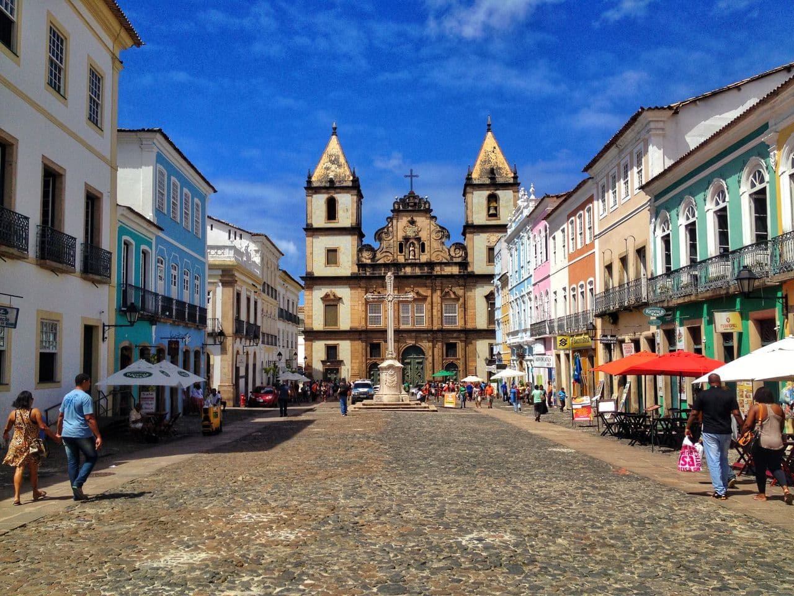
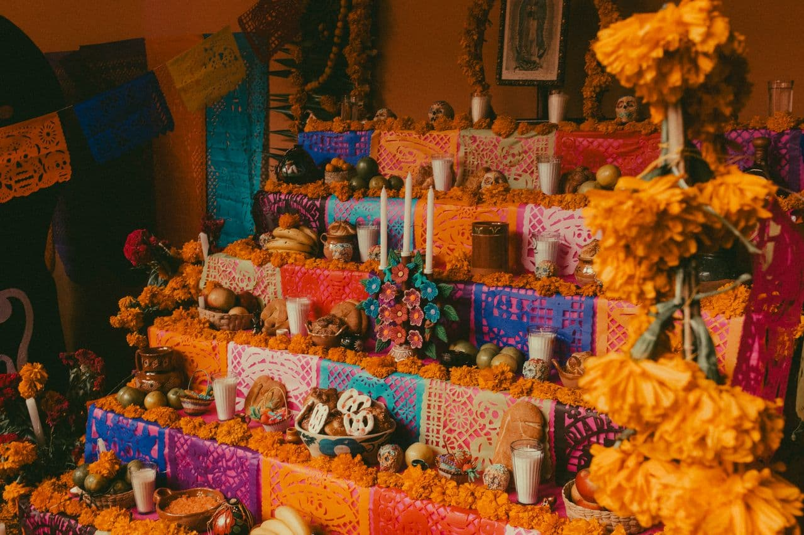
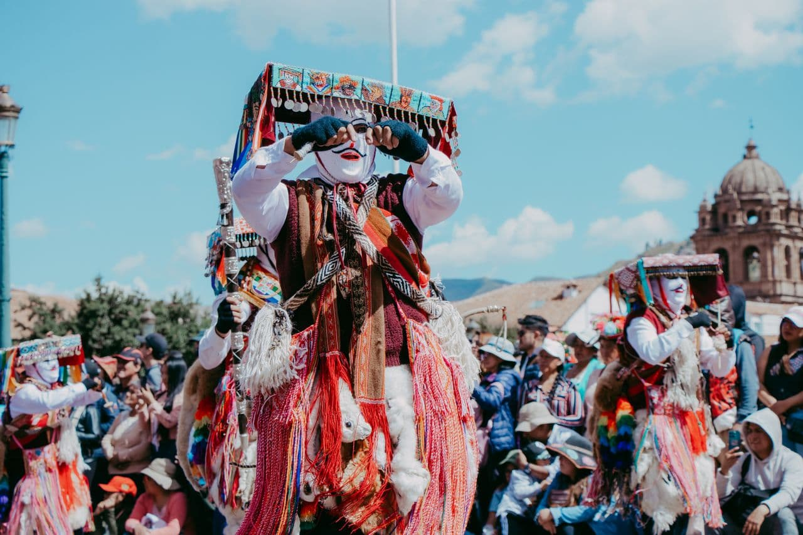
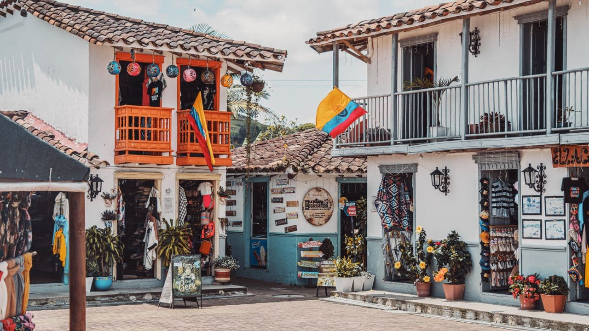
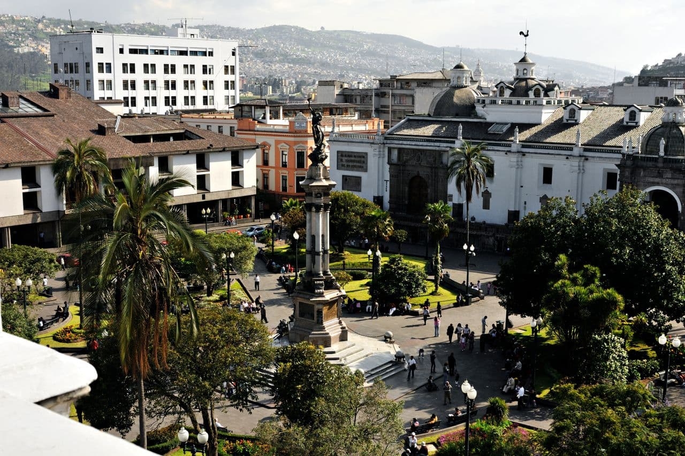
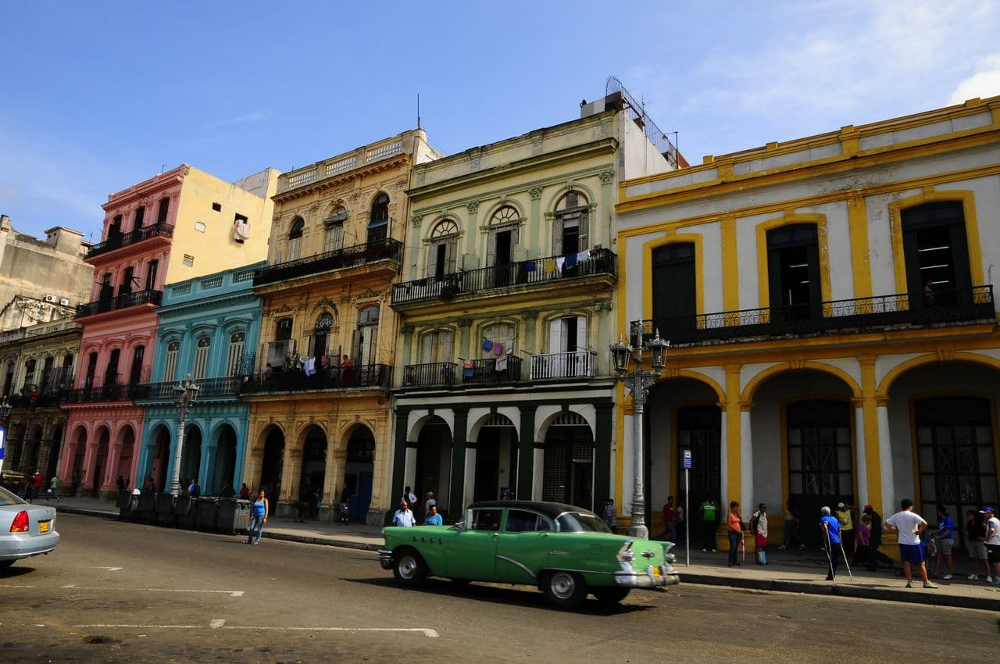

México
Mercados, cocinas regionales y ciudades donde el pasado conversa con el presente.
NorteUNA REVISTA PARA MIRAR LATINOAMÉRICA DE CERCA
EDICIÓN 01-MUCHAS TIERRAS, MUCHAS HISTORIAS
Países que se cuentan en una mesa, una plaza o un paisaje. Descubre lo que nos conecta y lo que hace único a cada lugar.
Empieza a descubrirSin prisa. Sin una sola mirada. Un viaje cultural, historia a historia.

Oaxaca, México
Un viaje por Latinoamérica, país por país, historia por historia.

Mercados, cocinas regionales y ciudades donde el pasado conversa con el presente.
Norte
Del Caribe a los Andes: músicas, paisajes y muchas maneras de compartir un café.
Sur
Lenguas y culturas mayas vivas, volcanes y pueblos a orillas del lago Atitlán.
CentroaméricaLibrerías, sobremesas y paisajes que cambian de la puna a la Patagonia.
Sur
Un país de muchas voces: herencias indígenas, afrobrasileñas y migrantes.
SurBosques nubosos, costas y comunidades que conviven con una biodiversidad extraordinaria.
CentroaméricaIngredientes, saberes y rituales cotidianos. Hay mucho más detrás de cada plato.
 MÉXICO · COCINA
MÉXICO · COCINA
La nixtamalización transforma el maíz desde hace siglos. En una tortilla también hay técnica, territorio y memoria.
 PERÚ · SABORES
PERÚ · SABORES
Pescado, limón, ají y saberes compartidos: una preparación con distintas expresiones a lo largo de la costa peruana.
 ARGENTINA Y URUGUAY · SOBREMESA
ARGENTINA Y URUGUAY · SOBREMESA
Más que una bebida, un gesto cotidiano de hospitalidad. La ronda tiene sus tiempos, sus códigos y sus historias.
No son piezas de museo: cambian, se transmiten y se reinventan en comunidad.

MÉXICO · MEMORIA COLECTIVALas ofrendas dan lugar a la memoria de quienes ya no están. Flores, alimentos y objetos queridos expresan vínculos familiares, con prácticas distintas en cada comunidad.

BOLIVIA · MÚSICA Y COMUNIDADEl carnaval reúne danzas, música y devoción. La diablada es una de sus expresiones más reconocidas, dentro de una celebración de herencias entrelazadas.
Una celebración puede tener muchos significados. Conocer su contexto es parte de descubrirla.

COLOMBIA · CARTAGENABalcones, plazas y el pulso de Getsemaní: una ciudad caribeña cuya historia también se cuenta desde sus barrios.

ECUADOR · QUITOEn su centro histórico conviven plazas, talleres y arquitectura colonial, a casi 2.850 metros de altitud.

CUBA · LA HABANAPortales, patios y conversaciones a pie de calle. La Habana se descubre mirando su arquitectura y su vida cotidiana.
Cada mes, historias para descubrir un país, un sabor y una forma distinta de mirar. Sin ruido, con curiosidad.
Al suscribirte aceptas nuestra política de privacidad. Puedes darte de baja cuando quieras.